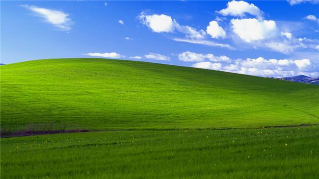

Legado desde 1892
1892
La primera vendimia
Entre suelos minerales y paciencia familiar, nace una tradición que entiende el vino como memoria viva.

1892
Entre suelos minerales y paciencia familiar, nace una tradición que entiende el vino como memoria viva.
1927
La casa perfecciona sus crianzas, dejando que la madera y el silencio dibujen profundidad en cada reserva.

1958
La finca se convierte en punto de encuentro: cosechas, relatos y decisiones compartidas bajo la misma luz.

1989
El Carmenère encuentra una voz propia entre brisas templadas, días luminosos y noches de maduración lenta.

Hoy
La historia continúa en experiencias íntimas, catas cuidadas y botellas que conservan el pulso de la tierra.

Vinos de guarda y ediciones limitadas nacidas en los valles patrimoniales de Chile.

La finca respira entre suelos minerales, brisas templadas y espacios diseñados para contemplar el origen.
Debajo de cada cosecha hay siglos de historia geológica. Nutrimos la tierra sin forzarla, respetando la naturaleza que define nuestro carácter.
Cada surco sigue la curva natural de la montaña, trabajando al ritmo de la tierra para que el fruto madure sin afán.
La altitud y las corrientes de aire fresco crean un refugio natural donde el clima hace su trabajo silencioso.
Espacios diseñados para dialogar con el paisaje, detenerse y experimentar de dónde viene todo.
Un encuentro íntimo con la viña, preparado con cuidado para visitantes que buscan una experiencia memorable. Abrimos nuestras puertas a grupos reducidos para compartir el silencio de la cava, el pulso del viñedo y cosechas reservadas que no están en el mercado.
Seleccione una opción para coordinar su pase privado
Descenso a la sala de barricas subterránea. Degustación guiada por sommelier de cuatro añadas icónicas, maridadas con quesos artesanales curados y pan rústico de masa madre.
Descorche directo de barricas de guarda y cata vertical de las añadas 2012, 2015 y 2018.
Almuerzo campestre privado de cinco tiempos en el mirador de la finca. Cada plato es concebido para revelar los taninos y notas minerales de nuestras reservas familiares.
Menú de autor concebido con ingredientes de la huerta orgánica y armonizado paso a paso.
Paseo silencioso al atardecer por los surcos centenarios, culminando con una cesta de cata gourmet privada al pie de la montaña mientras el valle se tiñe de tonos dorados.
Degustación en meseta con vista al valle andino acompañada de charcutería artesanal y pan de campo.
Coordinación directa con nuestro Sommelier Residente
Un máximo de 8 visitantes por turno para garantizar silencio, calma y privacidad absoluta en bodega.
Atención personal en cada copa, revelando la memoria climática y sensorial de cada vendimia histórica.
Instalaciones bioclimáticas en armonía con los viñedos centenarios y las brisas templadas del Maule.
Servicio de asistencia personalizada para transporte privado, reserva de añadas y despacho seguro.